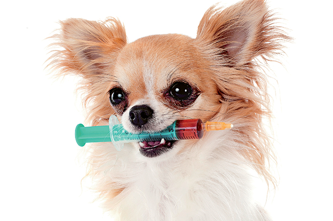

Os cachorros são animais sociáveis com indivíduos da sua espécie e com outras espécies, sendo uma ótima opção de companhia. A grande diversidade de raças e portes permite que encontremos um companheiro que atende aos mais diversos estilos de vida e habitação. Concomitantemente ao lazer e às práticas domésticas, os cães são essenciais no auxílio de tarefas, ajudando diretamente o homem em buscas, amparo físico/visual, entre outros. Desta forma, percebemos que este animal é ideal para quem busca um companheiro, sendo versátil às expectativas desejadas e tomando um papel importante na família e na sociedade. Entretanto, eles demandam atenção, tempo e cuidados contínuos, sendo importante ter em mente alguns fatores a respeito desses animais antes de decidir trazê-los para o lar, evitando decepções e futuros abandonos. Segue abaixo uma lista com algumas informações indispensáveis para quem deseja ter um cachorro:
A higiene dos cães deve variar de acordo com a raça e o estilo de vida do animal. Dependendo da organização diária, os pets podem fazer suas necessidades dentro ou fora de casa. Se feitas dentro de casa, é imprescindível o descarte diário destes dejetos, a fim de afastar os animais de qualquer possível contaminação e evitar o mau odor dentro de casa. Caso feito ao ar livre, é ideal levá-lo no mínimo duas vezes ao dia, a fim de acostumar fisiologicamente os horários do cachorro, lembrando sempre da importância de recolher as fezes com uma sacola plástica, para descarte adequado. Com relação ao banho os cachorros podem demandar diferentes cuidados. De acordo com o porte, pelagem e rotina do cachorro, os banhos podem variar entre a cada 7, 15 ou 30 dias. Apesar das diferenças de acordo com cada animal, esse hábito é importantíssimo para o controle de pragas, tratamentos veterinários e a prevenção de possíveis doenças de pele. Assim como o banho, a necessidade de escovação varia de acordo com cada raça, sendo importante manter uma rotina para evitar pelos embaraçados e diminuir a quantidade de pelos no ambiente. As unhas devem ser cortadas com frequência com tesoura específica para evitar que os próprios bichinhos se machuquem.
Sendo majoritariamente carnívoros, os cães podem ter uma alimentação mais diversificada, comparados a outras espécies que também tem a carne como sua fonte principal de energia. Adotado pela maioria dos tutores, as rações secas costumam ser a principal fonte alimentar dos cachorros. Se produzidos com produtos de qualidade e com alto teor de vitaminas e minerais, esse alimento tende a garantir as necessidades nutricionais do seu pet, por isso é importante conhecer seu animal e qual produto é o melhor para ele, levando em consideração fatores como idade, peso e raça. Apesar da praticidade das rações industrializadas, uma alternativa cada vez mais implementada é a da alimentação natural, dando ao animal tudo que ele precisa diretamente dos insumos geralmente usados para a produção da ração. Vale ressaltar também que é indispensável a disponibilidade integral de água limpa e fresca para o cãozinho, trocando constantemente para garantir a hidratação do mesmo.
A prática de atividade física é necessária e vantajosa para os cães. Além de ajudar a combater a obesidade e a diversas doenças, ela tem como fim gastar toda a energia necessária de forma saudável, podendo estreitar os laços entre os pets e seus tutores. Atividades simples, como uma caminhada, corrida ou circuitos, podem promover o fortalecimento dos músculos, ossos e articulações, assim como aumentar a capacidade cardiorrespiratória tanto dos cachorros quanto dos seus donos. Esse hábito pode evitar alguns conflitos internos de relacionamento, tanto com o dono, diminuindo os casos de agressividade, quanto com o ambiente, afastando as chances da energia não gasta sobressair sobre os móveis e objetos dentro de casa.
A prevenção sempre é a melhor maneira de manter seu cãozinho saudável. O primeiro passo é seguir todo o protocolo de vacinas e vermifugação determinada para a espécie, desta forma você estará resguardando o seu animal, assim como os outros que possam interagir com ele. Concomitantemente, a visita anual ao médico veterinário, para avaliação clínica, previne uma descoberta tardia de alguma possível anormalidade, tornando muitas das vezes a questão mais simples de ser resolvida. Somado a isso, os bons hábitos alimentares, assim como a prática de atividade física, atuam diretamente na manutenção da saúde do seu cachorro.
